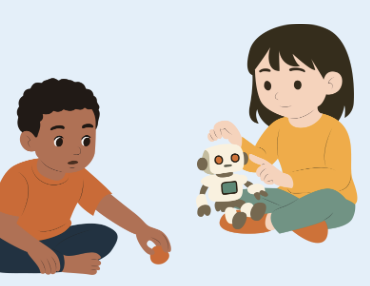

En esta sección encontrarás diversos tutoriales y actividades diseñadas para introducir a los niños y niñas en el mundo de la robótica y las areas STEM de manera lúdica y educativa.
Todas las actividades están clasificadas como "Misiones" en el cual serás un astronautra explorador que tendrá que cumplir cada una de las misiones para asegurar un aprendizaje continuo y constante, cada una de las misiones están pensadas para ser llevadas a cabo en el aula o en casa, con materiales fáciles de conseguir y sin necesidad de conocimientos previos. Tales actividades van desde lo más fácil hasta lo más avanzado para que los niños puedan tener un proceso de aprendizaje efectivo donde puedan desarrollar sus habilidades y conocimientos poco a poco y al final puedan descubrir su potencial en estas áreas.

Formar una generación de niñas y niños que vean la tecnología como un medio para transformar su realidad, inspirándolos a estudiar carreras STEAM y a desarrollar proyectos propios que generen impacto positivo en sus comunidades y en el mundo.